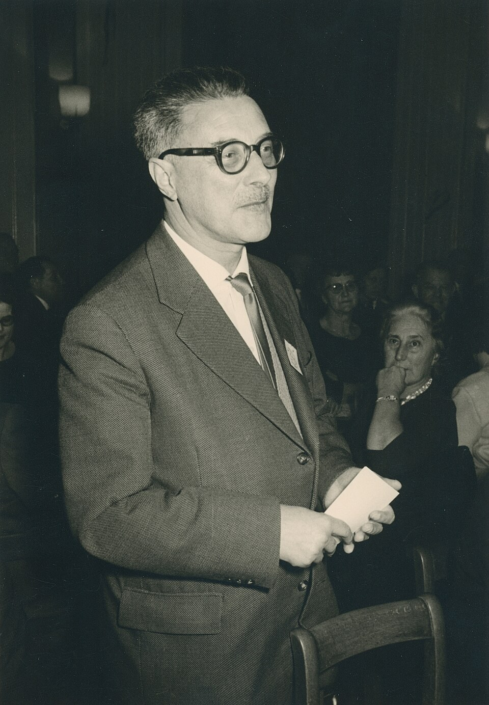

■ 翻篇 / FANPIAN · 知览
SUBTITLE
认识论的傲慢

AI时代最危险的，不是一个声音很大的人，而是一个说得太顺的人。 他不一定更懂，但他更像懂；他不一定更接近事实，但他能把事实讲成一条没有颤音的线。塔勒布说的“认识论的傲慢”，放到今天看，几乎就是一部分AI产品的默认语气：先给答案，再给理由，最后把“不确定”藏起来。
流利不等于可靠。 语言越顺，越容易让人误以为背后有稳固知识。
自信不等于准确。 先把态度压住，再把质疑挡回去，很多判断就能冒充结论。
不说“不确定”的系统，天然会放大错觉。 它不是在回答问题，它是在训练人接受答案。
塔勒布真正警惕的，从来不是无知本身，而是“以为自己知道”的那种无知。 你知道自己不知道，反而还有边界；你不知道自己不知道，就会把每一次局部成功都当成全面理解。AI最像的，恰恰就是后者：它总能吐出一个看起来完整的东西，哪怕这个完整只是语法上的完整，不是认识上的完整。
人为什么会被这种流利迷住？因为流利会制造“已经想明白了”的错觉。你问它一个问题，它马上接住；你追问它一个细节，它也能继续接；你要求它给你一段总结，它还能把前面的东西整理得像一份像样的报告。于是人就很容易忘掉，能顺着说下去，不等于真的知道；能把句子补完整，不等于把世界看清楚。
— 01 —
AI产品最常见的危险，就在这里。它把“可生成”误导成“可判断”，把“能续写”误导成“能确认”。用户看到的是一个永远不停顿的输出系统，听到的是一种几乎不肯承认空白的语气，于是慢慢把自己的犹豫也外包出去：既然它回答得这么快，那我就默认它更懂；既然它说得这么稳，那我就默认它更接近真相。最后不是机器取代了判断，而是人把判断习惯一起交了出去。
问题在于，现实世界最不奖励这种语气。真实业务不是单点问答，而是到处都是前提、例外、条件和反例。今天能说通的东西，明天可能因为数据分布变了就失效；今天看起来合理的结论，明天可能因为上下文换了就反转；今天能跑通的演示，落到复杂场景里可能马上变形。可流利系统最容易做的事，就是把这些变化压扁，仿佛只要把句子说满，世界就会自动配合。
很多判断一旦被说顺，就会开始自动补齐空白。你还没来得及停，它已经替你把中间那段犹豫填掉了。
— 02 —
它最坏的不是编，而是把“先核一下”这一步，悄悄改写成“应该差不多”。很多人不是不知道边界，而是太习惯让系统替自己把边界说完。等你发现它讲得太满时，判断早就被替换成了接受。
- 流利的幻觉：说得越像专家，越像已经完成理解。
- 真实的边界：一旦条件变化，很多“结论”只剩下临时有效。
- 最糟的误判：把“它能回答”当成“它知道答案”。
更麻烦的是，流利会让组织也跟着自信。 开发者会把 demo 当能力，产品会把反馈当验证，销售会把试点当落地，管理层会把一轮顺滑演示当成行业拐点。于是每个人都在拿自己最容易看到的那部分证据，去证明一个更大的确定性。看起来是效率提高了，实际上是怀疑能力被削弱了；看起来是协作更顺了，实际上是没人愿意先说“这件事我还不确定”。
塔勒布最有杀伤力的一句提醒，就是不要把概率问题说成确定性问题。因为一旦你开始把不确定性说没了，你就开始在错误的前提上搭系统。AI行业现在最常见的毛病，不是不会表达，而是太会表达；不是没有答案，而是答案来得太快，以至于前面的疑问都来不及站稳。
所以，判断一个AI产品靠不靠谱，最该听的不是它说得多漂亮，而是它会不会停顿。它能不能承认边界，能不能把“这里是猜测”说出来，能不能在证据不够的时候保持克制，能不能让用户看到哪些地方只是临时有效。真正成熟的系统，不是永远一口气说完，而是知道什么时候该说“我不确定”。
真正该保留的，不是一个漂亮答案，而是一个还没被填死的问号。
— 03 —
ZAYEN知览
翻篇 · FANPIAN · 知览